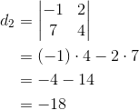
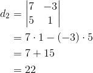
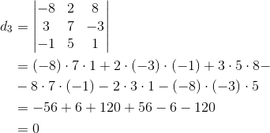
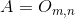
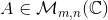
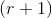

Rangul unei matrice
Minor de ordin k al unei matrice
Fie matricea , , .
Înainte de a defini rangul matricei  , trebuie să introducem noțiunea de minor de ordinul al matricei .
, trebuie să introducem noțiunea de minor de ordinul al matricei .
Definiția M29: Minor de ordin al unei matrice
Se numește minor de ordinul al matricei , unde cu și , , determinantul matricei obținute prin intersercția a linii și coloane diferite, extrase din matricea (se păstreză ordinea elementelor în liniile și coloanele matricei date) .
Exemplu:
Fie matricea
Printre minorii de ordinul 1 ai matricei se numără:
, , , etc.
Observație:
Putem alege orice determinant de ordinul format din elementele matricei date.
Minori de ordinul 2
Intersectând primele două linii cu primele două coloane, obținem minorul:
Intersectând a doua și a treia linie cu primele două coloane, obținem minorul:
Intersectând a doua și a treia linie cu a doua și a treia coloană, obținem minorul:
Minori de ordinul 3
Intersectăm cele trei linii ale matricei cu primele trei coloane și obținem minorul:
Intersectăm cele trei linii ale matricei cu a doua, a treia și a patra coloană și obținem minorul:

Rangul unei matrice
Definiția M30: Rangul unei matrice
Matricea are rangul  dacă are un minor nenul (diferit de
dacă are un minor nenul (diferit de  ) de ordin , iar toți minorii săi de ordin mai mare decât , dacă există, sunt nuli.
) de ordin , iar toți minorii săi de ordin mai mare decât , dacă există, sunt nuli.
Se notează .
Exemple:



.
Observații:
- Dacă , atunci prin convenție s-a stabilit că (deoarece toate elementele matricei nule sunt egale cu , orice minor de orice ordin al matricei va fi egal cu ).
- Pentru a spune că rangul unei matrice  este numărul este necesar și suficient să se găsească un minor nenul de ordinul și toți minorii de ordin , dacă există, să fie nuli.
- Matricele și
 de aceleași dimensiuni și care au același rang se numesc rațional echivalente și notăm .
de aceleași dimensiuni și care au același rang se numesc rațional echivalente și notăm .
 și
și  .
.